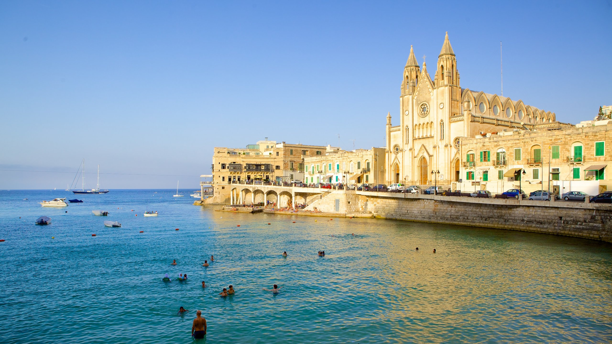

CATMANDU - NEPAL
A capital do Nepal é cercada por um vale repleto de locais
históricos, templos e santuários antigos, e vilarejos fascinantes.
Misture-se com os locais e animais entre os monumentos de Durbar
Square ou com mochileiros praticantes de trilhas no agitado Thamel
District. Explore lojas em busca do artesanato refinado dos artesãos
locais. Carpetes e gravuras em papel são as especialidades. Thamel é
a parte mais antiga da capital. Também era conhecida como Tabitha
Bahal, e merece uma visita obrigatoriamente. É um dos bairros mais
movimentados da cidade de Catmandu. Aqui vais encontrar de tudo, até
equipamento de montanha para te preparares para as caminhada, a
preços muito baixos. Existem, também, lojas de antiguidades,
livrarias, restaurantes cafés e uma mistura de diferentes hotéis e
albergues.

Localizado no alto de uma colina, a oeste da cidade de Catmandu,
pode ser alcançado por uma subida de 365 degraus em pedra. Uma das
primeiras coisas que vais notar, mesmo antes de começares a
caminhada, são os macacos. Centenas deles vivem e circulam pelas
instalações do templo. Acredita-se que eles sejam sagrados, embora
seja melhor não pensar sobre o motivo: dizem que eles foram formados
a partir dos piolhos da divindade budista Manjushri, que foi criada
neste local. Este santuário ostenta uma stupa branca imponente com
os cativantes olhos de Buda e uma torre dourada cintilante.
Swayambhunath oferece uma vista panorâmica da cidade e mostra-te
exatamente como Catmandu está no fundo de um vale, com os milhares
de casinhas todas acumuladas no fundo. Neste local vais encontrar
muitos monges, peregrinos e muitos habitantes que vêm até aqui
rezar, ou fazer uma paragem para comer.